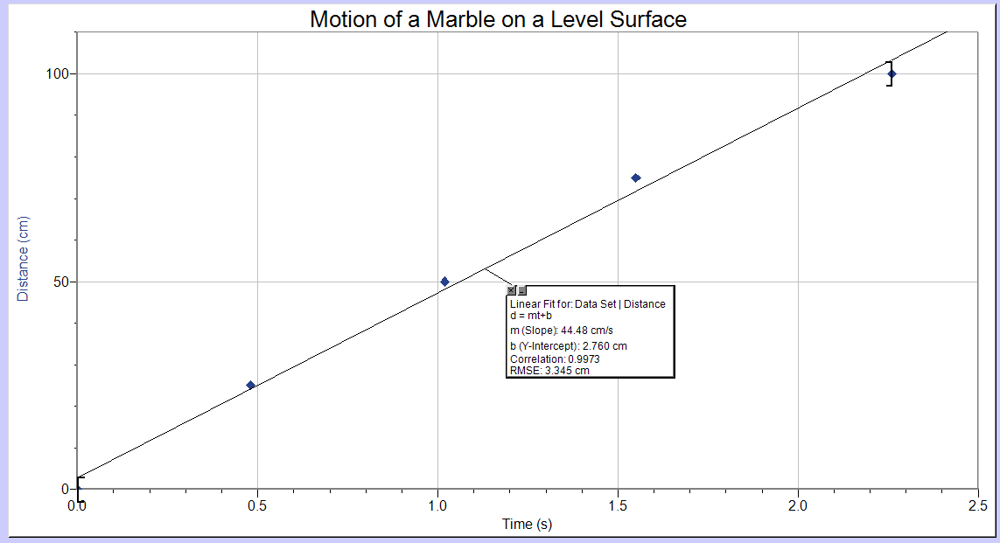
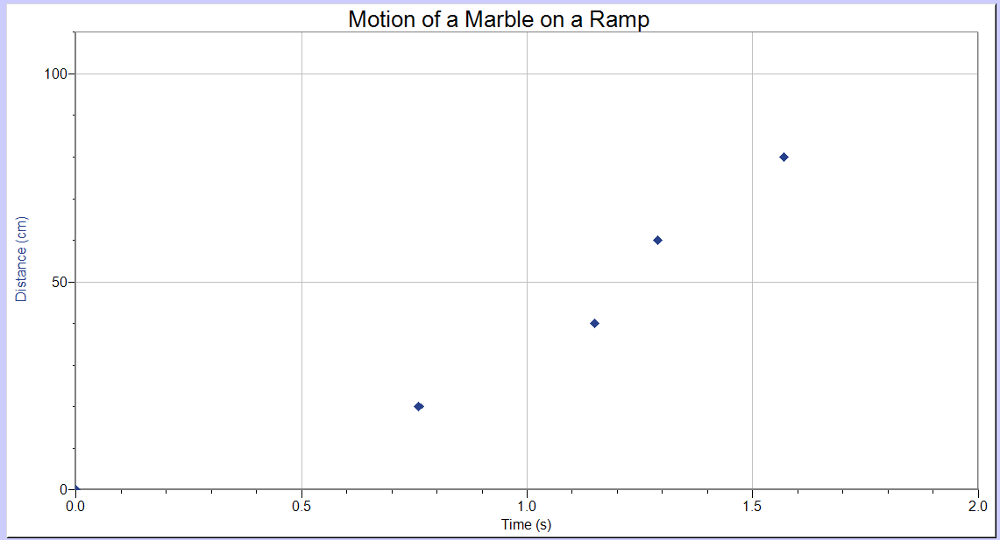
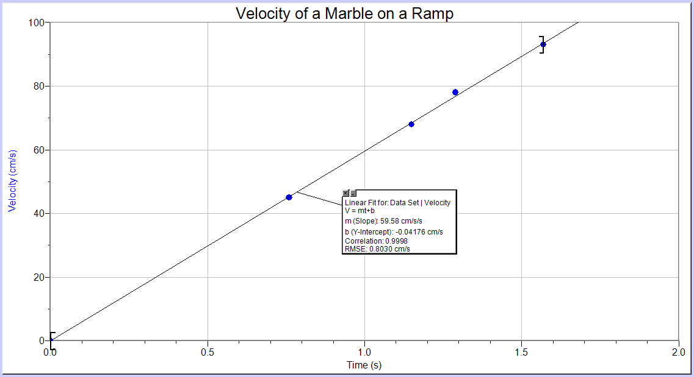

Velocity is a change in displacement over time, and objects moving at constant speed in a straight line are said to be travelling with uniform motion. Since, by definition:
re-arranging and setting ti = 0 and di = d0 results in:
If we allow the final time and position to be left unspecified, then:
This equation assumes the velocity is constant. Since position and time are variables, and d0 is a constant, by comparing this equation to the general form of a straight line:
a plot of time on the x-axis versus position on the y-axis should result in a straight line with the slope of the line measuring the constant speed.
Acceleration is a change in velocity over time, so an acceleration occurs if an object is speeding up, slowing down or changing direction. If an object is speeding up or slowing down at the same rate and not changing direction, the object is said to be traveling with constant acceleration.
Starting from the definition of acceleration:
and following the same mathematical logic as above results in the equation:
if an object is experiencing a constant acceleration. Therefore, a graph of velocity versus time should be a straight line with the slope measuring the acceleration.
In this experiment, a marble starting from rest rolls down an inclined plane and across a smooth, level surface. It seems reasonable that the motion across the level surface may be uniform motion; it is also possible that the acceleration on the ramp is a constant acceleration. The data collected in this experiment will determine if either or both assertions are accurate.
Set up a ramp on a smooth surface such as a table top or a non-carpeted floor. Use a book, block or another object to set the angle of the ramp to around 20 degrees (about a 10 cm vertical height at one end of a meter-long ramp). Practice rolling the marble down the ramp and observe the motion on both the ramp and across the level surface.
An example of a marble rolling down a ramp and across the floor. The marble was released from a distance of 30 cm up the ramp.
For this Part, data is collected for position as a function of time when the marble is rolling across a level surface. Accurate data may be obtained by measuring the time it takes the marble to roll from the end of the ramp to a series of specified distances: for example, from the end of the ramp to a location 20-cm from the end; then from the end of the ramp to the 40-cm mark; etc.
Lay a measuring tape or meter stick next to the path the marble takes on the level surface. Let the end of the ramp be the origin of the coordinate system. Identify or mark distances from the end of the ramp such as 20 cm, 40 cm, 60 cm etc.
The distance interval chosen will depend on the speed of the marble and the ability to measure time accurately with a stopwatch. A total traveling distance of at least 100 cm is also recommended, although a faster marble may require a distance up to 200 cm for definitive results. Also, a minimum of five data points will result in data that is easy to interpret. For a ramp set up as recommended, a starting point 10 - 20 cm up the ramp from the level surface usually results in reasonable, moderate marble speeds.
Practice rolling the marble from a marked point on the ramp before collecting data. When ready, use a stopwatch to record the time it takes the marble to reach each distance. Averaging two or three measurements is recommended. Record the average time to the closest tenth of a second in the data table on the Report Sheet.
The following data was collected for a marble starting from the 20-cm mark on the ramp shown in the previous video clip. A timer was started when the marble first struck the floor and stopped when the ball reached each of the distances from the end of the ramp indicated in the first column of the data table.
Three measurements were made for each distance, and the average value is reported in the last column.
| Distance Traveled (cm) | Time Measurements (s) | Average Time (s) |
| 25 | 0.49; 0.42; 0.52 | 0.48 |
| 50 | 0.96; 1.06; 1.03 | 1.02 |
| 75 | 1.51; 1.51; 1.63 | 1.55 |
| 100 | 2.21; 2.28; 2.28 | 2.26 |
To determine if the acceleration on the ramp is constant, it is necessary to record the speed of the marble as a function of time. We will assume that the speed of the marble at the end of the ramp is the same as its speed traveling across the level surface. And since acceleration is independent of a coordinate system, if the marble always starts from rest, then the speed should be the same after it has traveled a given distance whether the ramp happens to end at that distance or not.
Mark 20-cm intervals up the ramp, starting from the point where the ramp touches the level surface. Measure the time it takes the marble to travel 20 cm down the ramp when starting from rest. Do this a few times to find an average time and record the value in the data table on the Report Sheet. Repeat this procedure when the marble is released from rest from the other marks and record a minimum of four different distances and times.
Other intervals, such as every 10 cm up the ramp, may also be chosen for data collection.
The following data was collected for a marble rolling down the ramp shown in the video clip. A book was placed a few centimeters from the end of the ramp. A timer was started as soon as the marble was released from rest on the ramp, and stopped when the ball struck the book.
Each of the distances down the length of the ramp are indicated in the first column of the data table. Three time measurements were made for each distance and are listed in the second column, with the average time value shown in the last column.
| Distance traveled (cm) | Time measurements (s) | Average time (s) |
| 20 | 0.74; 0.77; 0.77 | 0.76 |
| 40 | 1.18; 1.09; 1.19 | 1.15 |
| 60 | 1.28; 1.28; 1.31 | 1.29 |
| 80 | 1.57; 1.57; 1.58 | 1.57 |
Release the marble from the first mark again, but now measure the time it takes to roll a certain distance across the level surface. For example, you could choose to measure the time it takes the marble to roll 100 cm. Since the definition of speed is a change in distance over time, the distance the marble rolled across the level surface divided by the time it took to roll that distance will be the marble's average velocity for the trial.
Compute an average speed of the marble for each of the starting positions on the ramp and record them in the data table. Multiple timings will lead to more accurate results.
For these results, the marble was released from rest at the distances indicated in the first column. A book was placed either 50 cm or 100 cm from the end of the ramp, as indicated in the second column, which is the distance Δx. Timing started as soon as the marble hit the floor and ended when it struck the book. The third column shows the three time measurements and the fourth column is the average time of the ball rolling on the floor, Δtav. The last column is the average speed as the ball rolled across the floor, v = Δx/Δtav.
| Distance traveled down the ramp (cm) | Distance traveled across the floor (cm) | Time measurements (s) | Average time (s) | Average speed (cm/s) |
| 20 | 50 | 1.15; 1.09; 1.13 | 1.12 | 45 |
| 40 | 50 | 0.74; 0.72; 0.74 | 0.73 | 68 |
| 60 | 100 | 1.28; 1.28; 1.31 | 1.29 | 78 |
| 80 | 100 | 1.09; 1.03; 1.12 | 1.08 | 93 |
Open Logger ProTM and record the time in the x-column and distance traveled in the y-column. The plot should include proper graphing technique: a title for the graph, labeled axes, a solid point symbol, etc.
If the motion is uniform, then the graph should look like a straight line with the slope equal to the average speed of the marble. If this is the case, use the Linear Fit button and record the equation representing this motion on the Report Sheet.

A plot of the data collected for the marble in Part 1.
Save the file as uniform motion.cmbl.
Choose 'New' from the File menu in Logger ProTM. Label the x-column 'time' with units of sec and the y-column 'distance' with units of cm. And a third manual column labelled 'velocity' with units of cm/sec. Record the data from the Report Sheet in each appropriate column.
Make a plot of time on the x-axis versus distance on the y-axis. Use the Add Page option to create a plot of time on the x-axis versus velocity on the y-axis. Both plots should show proper graphing technique: a title for the graph, labeled axes, a solid point symbol, etc.
If the acceleration on the ramp is uniform, then the second graph of velocity as a function of time should look like a straight line with the slope equal to the constant acceleration of the marble. If this is the case, use the Linear Fit button and record the equation representing this motion on the Report Sheet.

A plot of the data collected for the marble's position in Part 2.

A plot of the data collected for the marble's velocity in Part 2.
NOTE: Do not make linear fits to both plots! It is not possible for the marble to be traveling at constant speed (a straight line through the data on the d vs. t graph) and also to have a constant acceleration (a straight line through the data on the v vs. t graph). Pick one, or neither, but not both!
Save the file as accelerated motion.cmbl.
1. If the speed is constant for Part 1: Uniform Motion, then d = d0 + vt. Based on the parameters of the best linear fit to the data, y= mx + b, what are the values of d0 and v for your marble?
2. If the acceleration is constant for Part 2: Accelerated Motion, then v = v0 + at. Based on the parameters of the best linear fit to the data, y= mx + b, what are the values of v0 and a for your marble?
3. Since the marble always started from rest, what value of v0 would you expect as the intercept for Question 2, and how close did you come to it?
4. If the acceleration is constant for Part 2, then the plot of distance as a function of time should be a parabola. On the Analyze menu, chose 'Curve fit ...' to fit the curve to a quadratic function. Click on the third radio button for quadratic fit, then click on the "Try Fit" button.
Since the marble started at the origin of the coordinate system from rest, both the b and c coefficients should be close to zero. Also, by of the principles of calculus, the a coefficient of the quadratic function should be about half of the value found for the slope of the v vs. t graph (i.e., d = d0 + v0t + ½at2).
What is the value of the constant acceleration based on the a term of the best fit to a quadratic of the data on the first graph?
5. How do the values of the acceleration from the two plots compare to each other? Are they close? Justify your response.
Submit the finished Report Sheet to the Lesson 3 Lab: Uniform and Accelerated Motion assignment folder. Also include the Logger Pro file motion.cmbl with three graphs: position as a function of time for motion on a flat surface; and two graphs of position versus time and velocity versus time for the motion on the ramp.
Note: your lab Report Sheet should be completed by hand. You will need to scan and upload the completed document as a PDF to the assignment folder.